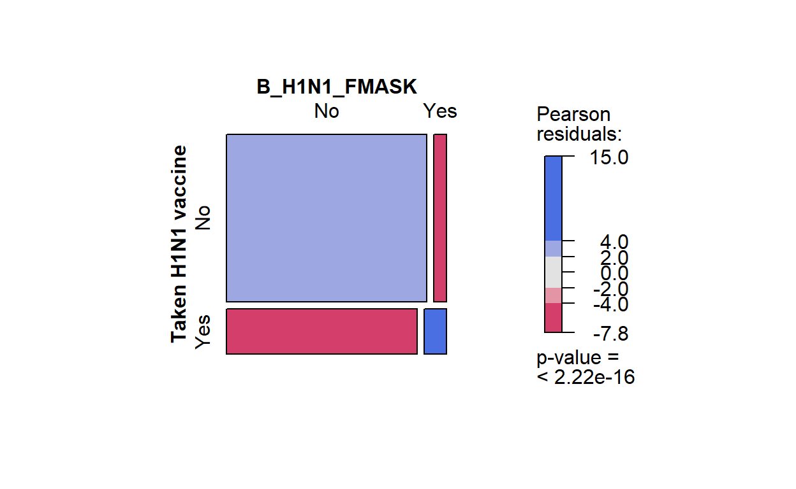
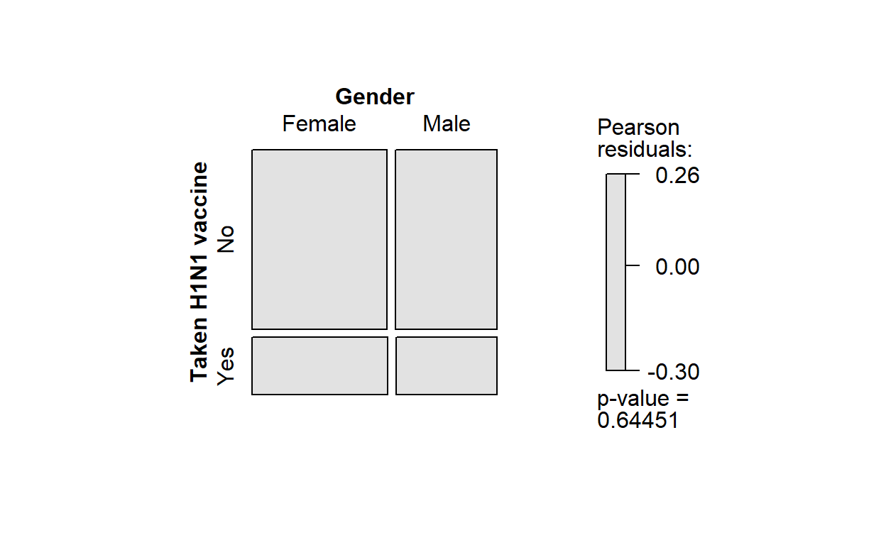
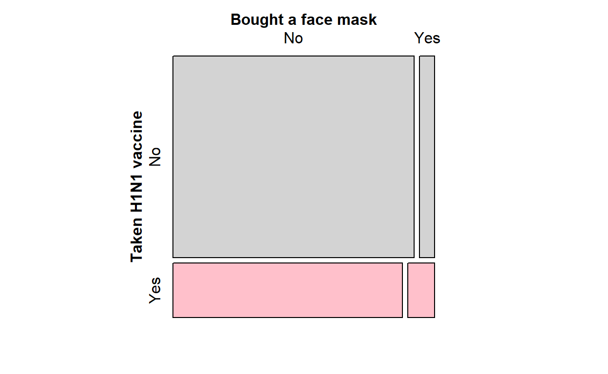
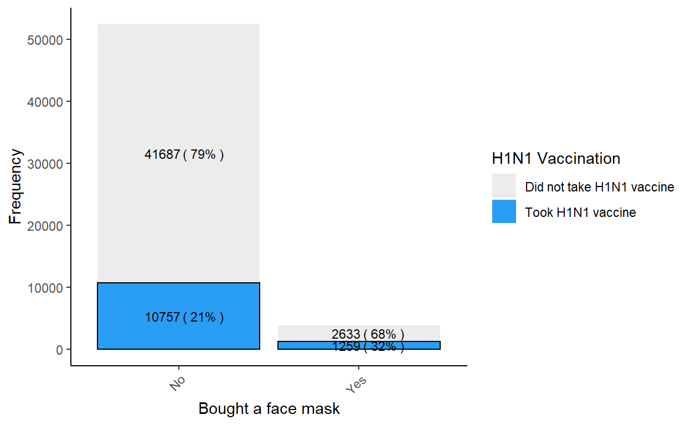

Exploratory data analysis forms the first component of the Shiny application on the prediction of whether an indiviudal would take the H1N1 vaccine. Its role is to give users of the application introductory insights into the relationship between input variables and the target variable, before the user proceeds to the other components of the Shiny application on explanatory and predictive models.
Literature review was conducted to analyze how Exploratory Data Analysis (EDA) has been performed before, and whether those techniques are applicable to the project on the explanatory and predictive modeling of whether an individual is likely to undergo H1N1 vaccination. In view of the scope of the project that covers explanatory and predictive modeling, the objective of the EDA is to visualize the relationships between input variables and the target variable so as to identify any trends which may suggest the usefulness of an input variable in predicting the target variable.
A key consideration in deciding the type of visualization is the data type of the input variables. For this dataset, most of the input variables are categorical. Therefore, visualizations that are suitable for categorical variables will be explored, as opposed to visualization that are suitable for continuous variables such as correlation plots and histograms.
Many descriptive visualizations have been made to visualize survey responses on attitudes towards H1N1 vaccination before, or related public health topics on other pandemics. Some examples have been highlighted below:
Distribution of survey responses
An example of a visualization is responses of survey respondents on a scale of Strongly Disagree to Strongly Agree with respect to various statements, and how these proportions have changed over time. The visualization is available at this link and a screenshot is provided below:
Geospatial distribution of Survey Responses
Another example of a visualization is a global map visualizing how the proportions of survey respondents who Strongly Agree or Agree with the statement that ‘Vaccines are imporant for children to have’. The visualization is available at this link and a screenshot is provided below:
However, these visualizations are not the most relevant for this project. While this dataset also involves survey responses, the objective of the visualization is not to gain insights on the survey responses alone but to gain insights on how the survey responses influence whether an individual takes the H1N1 vaccination. Therefore, I will not be following what these visualization have done, but look at other methods that can be used to explore the relationship between an input and target variable.
The mosaic plot data visualization technique is suitable for visualizing multivariate categorical data. A mosaic plot is a graphical display of cell frequencies in a contingency table, which is useful in this project where we are looking at how each input variable affects the target variable.
While there are many packages that can be used for mosaic plots including ggmosaic and dlookr which contains plot.relate(), I will be using the vcd package. vcd stands for visualizing categorical data. ggmosaic, dlookr and vcd are all able to plot the basic requirements of a mosaic chart - which is to plot 2 categorical variables against each other and modify the aesthetics of the graph (e.g. color scheme) as required. However, the vcd package stands out for its shade function, where it is able to shade the mosaic plot based on chi-square test results. This color scale would be a useful indicator for this project in helping the user observe which input variables have a relationship with the target variable, and provides early insights into which input variables might be included or excluded in the explanatory and predictive models.
However, a disadvantage of the mosaic plot is that rectangles can vary considerably in aspect ratio. As it is difficult to compare rectangles of different length and width, a user may not be able to compare the frequencies of the rectangles. To overcome this difficulty, a bar plot can be used in conjunction with the mosaic plot.
Bar plots are also a suitable data visualization technique for visualizing multivariate categorical data by helping us to identify the relationship between the input and target variables. For this project, we will be using a stacked bar chart which will clearly illustrate the different bars for those who have taken the vaccine and those who have not. With the bar charts, labels will be added to show the count and proportions of those who have and have not taken vaccine within each group (see below for more details). In addition, it can also help us to observe the distribution of the input variables with respect to the target variable, and whether there are any plots with complete or quasi-complete separation. Variables with complete or quasi-complete separation need to be removed from the logistic regression.
While there are also many packages that can be used for bar charts, the package that I will be using is ggplot. The ggplot package is easy to manipulate and there are many different elements that we can add to the graph according to what is required. Aside from ggplot, other ways to plot barplots in R include R’s barplot() and barplot3d package. Barplot3d package is intended for 3d barplot, which I would not be exploring in this visualization. R’s barplot() offers similar functions to ggplot and can be used to do up simple barplots, but as a whole ggplot is a package with many more functions. Thus, ggplot is chosen.
There are other exploratory visualizations that we can explore for multivariate categorical data namely balloon plots, which can be plotted using ‘ggballoonplot()’ under ggpubr and correspondance analysis, which can be plotted using ’ca()’under the package FactoMineR. However, both of these plots will not be explored in this visualization. Most of the categorical variables in this visualization are binary and do not require balloon plots nor correspondance analysis which may be more suitable for categorical variables that have many categories.
Apart from visualizations, the contingency table is another commonly used technique for multivariate categorical data. There are many packages that are available for displaying tables including KableExtra, flextable, huxtable and reactable among many others. However, I will not need a contingency table as I will be including information on count in the bar chart.
Combining both elements of a mosaic plot and bar chart together, a storyboard has been sketched out as follows:
As the objective of this visualization is to visualize the relationship between input variables and the target variable, the top section of the storyboard aims to achieve this objective through the mosaic plot and bar chart. By selecting a variable in the left panel, the variable will be plotted against the target variable in the main panel. In addition, it may be interested to investigate if there are relationships between input variables, which the bottom section aims to achieve. Upon selecting both variables in the left panel, both variables would appear in the main panel.
The first step would be to install the required packages. The packages that I will be using are as follows:
| Package | Purpose |
|---|---|
| tidyverse | Data manipulation and plotting bar chart |
| vcd and vcdExtra | Plotting mosaic plot |
| scales | Displaying the proportions in the bar chart |
| stringr | Recoding the values in the column ‘State’ into letters where the first letter is capitalized |
The code for installing the packages is as follows:
packages = c('tidyverse', 'vcd', 'vcdExtra', 'scales', 'stringr')
for (p in packages){
if(!require(p, character.only = T)){
install.packages(p)
}
library(p, character.only = T)
}
The following line of code can be used to import the dataset.
H1N1 <- read_csv("data/H1N1_Final_dan_edit.csv")
There are a few steps that we can take to prepare the data.
The first step is to rename the column for ‘Concern Level’. This is a problem that is specific to our dataset. As Concern Level has a whitespace character, there may be difficulties in calling this variable in subsequent codes. Thus, we rename it as ‘Concern_Level’.
The second step is to handle NA values. We handle NA values differently for the target variable and input variables. For the target variable, we would remove NA values as these rows are not useful to our analysis. The code is as follows:
However, for input variables, it is acceptable to have NA values as long as these values are not above a certain threshold, which we have set as 50%. To select the input variables that have less than 50% of NA values, there are a few steps involved. The first step is to recode the NA values into NA as recognized by R. This is because the NA values in the dataset are coded as #N/A which is not recognized as an NA value to R. The following code can be run for this recoding process:
H1N1[H1N1 == '#N/A'] <- NA
Next, we can view a summary of the proportion of NA values in every column, the following code can be run:
Finally, we can select out the variables that have a missing value threshold of less than 50%. The following code can be run:
h1n1data <-H1N1 %>%
select(VACC_H1N1_F, VACC_SEAS_F, B_H1N1_ANTIV, B_H1N1_AVOID, B_H1N1_FMASK,
B_H1N1_HANDS, B_H1N1_LARGE, B_H1N1_RCONT, B_H1N1_TOUCH, CONCERN_LEVEL,
INT_H1N1, KNOW_H1N1, INT_SEAS, DOCREC, CHRONIC_MED_F, CLOSE_UNDER6MO_F,
HEALTH_WORKER_F, PATIENT_CONTACT_F, AGEGRP, EDUCATION_COMP, HH_CHILD_R,
INC_CAT1, MARITAL, RACEETH4_I, N_ADULT_R, SEX_I, STATE)
The third step is to code the variables as categorical.
h1n1data <- transform(h1n1data,
VACC_H1N1_F= as.factor(VACC_H1N1_F),
VACC_SEAS_F= as.factor(VACC_SEAS_F),
B_H1N1_ANTIV= as.factor(B_H1N1_ANTIV),
B_H1N1_AVOID= as.factor(B_H1N1_AVOID),
B_H1N1_FMASK= as.factor(B_H1N1_FMASK),
B_H1N1_HANDS= as.factor(B_H1N1_HANDS),
B_H1N1_LARGE= as.factor(B_H1N1_LARGE),
B_H1N1_RCONT= as.factor(B_H1N1_RCONT),
B_H1N1_TOUCH= as.factor(B_H1N1_TOUCH),
CONCERN_LEVEL= as.factor(CONCERN_LEVEL),
INT_H1N1= as.factor(INT_H1N1),
KNOW_H1N1= as.factor(KNOW_H1N1),
DOCREC= as.factor(DOCREC),
CHRONIC_MED_F= as.factor(CHRONIC_MED_F),
CLOSE_UNDER6MO_F= as.factor(CLOSE_UNDER6MO_F),
HEALTH_WORKER_F= as.factor(HEALTH_WORKER_F),
AGEGRP= as.factor(AGEGRP),
EDUCATION_COMP= as.factor(EDUCATION_COMP),
HH_CHILD_R= as.factor(HH_CHILD_R),
INC_CAT1= as.factor(INC_CAT1),
MARITAL= as.factor(MARITAL),
RACEETH4_I= as.factor(RACEETH4_I),
N_ADULT_R= as.factor(N_ADULT_R),
SEX_I= as.factor(SEX_I),
STATE= as.factor(STATE),
PATIENT_CONTACT_F = as.factor(PATIENT_CONTACT_F),
INT_SEAS = as.factor(INT_SEAS)
)
The fourth step is to create a new column for region based on the column in the dataset for state. To do so, we have another dataset that has columns for both region and state. We will start by importing this dataset with the following code:
region <- read_csv("data/state_region.csv")
Then, we will have to recode the values in the state column. This is because the values are currently all in uppercase letters. We will have to recode the letters into lowercase letters apart from the first letter. Finally, we can merge both tables using a left join.
h1n1data$state_recoded <- str_to_title(h1n1data$STATE)
h1n1data <- left_join(h1n1data, region,
by=c("state_recoded" = "State"))
After data preparation, the variables that I will be using are as follows:
| Category | Variable Name | Allowable Values |
|---|---|---|
| Target Variable | Taken H1N1 flu vaccine | Yes, No |
| Demographic | Gender | Male, Female |
| Demographic | Age Group | 6 months-9 years, 10-17 years, 18-34 years, 35-44 years, 45-54 years, 55-64 years, 65+ years |
| Demographic | Education Level | <12 years, 12 years, some college, college graduate |
| Demographic | Income Level | <=$10000, $10001-$15000, $15001-$25000, $25001-$35000, $35001-$50000, $50001-$75000, $75001-$100000 |
| Demographic | Marital Status | Married, Not Married |
| Demographic | Race | Hispanic, Non-Hispanic Black Only, Non-Hispanic White Only, Non-Hispanic Other or Multiple Races |
| Demographic | Number of children in household | 0, 1, 2, 3 |
| Demographic | Number of adults in household | 1, 2, 3, 4 |
| Demographic | Region | Northeast Region, Midwest Region, South Region, West Region |
| Behavioural | Taken seasonal flu vaccine | Yes, No |
| Behavioural | Taken antiviral medications | Yes, No |
| Behavioural | Avoid close contact with others with flu-like symptoms | Yes, No |
| Behavioural | Bought a face mask | Yes, No |
| Behavioural | Washing hands | Yes, No |
| Behavioural | Reduced time at large gatherings | Yes, No |
| Behavioural | Reduced contact outside home | Yes, No |
| Behavioural | Avoid touching eyes, nose or mouth | Yes, No |
| Attitude | Concern level about H1N1 flu | Not at all concerned, not very concerned, somewhat concerned, very concerned |
| Attitude | Intent to get H1N1 flu vaccine | Definitely no intent, improbably intent, probable intent, definite intent |
| Attitude | Knowledge about H1N1 flu | No knowledge, a little knowledge, a lot of knowledge |
| Attitude | Intent to get seasonal flue vaccine | Definitely no intent, improbably intent, probable intent, definite intent |
| Attitude | Doctor recommendation on vaccines | Never recommend vaccines, recommend seasonal flu vaccine only, recommend H1N1 vaccine only, recommend both seasonal flu and H1N1 flu vaccines |
| Risk Factor | Chronic medical condition flag | Yes, No |
| Risk Factor | Close contact with child under 6 months flag | Yes, No |
| Risk Factor | Works in healthcare field flag | Yes, No |
| Risk Factor | Direct patient contact flag | Yes, No |
As the storyboard contains mosaic plots and bar charts, this section will to test the codes for the plots and which kind of plots would work better for this project. While there are two sections in the storyboard, this prototype will focus on plotting a randomly chosen input variable against the target variable. The randomly chosen input variable is behavioural variable of whether the individual has bought a face mask. These codes can easily be replicated for other variables, and for the other section in the final Shiny application.
Starting off on the mosaic plot, the first option is to use shading for the chi-square test plot. The color legend indicates which cells contribute to the significance of the chi-squared test results, and means the following:
| Color | Statistical Significance |
|---|---|
| Red | There are fewer observations than would have been expected under the null model |
| Blue | There are more observations that would have been expected under the null mode |
The colors imply that there is a relationship between the input variable and target variable. In this case, survey respondents who bought a face mask are more likely to have taken the H1N1 vaccine. The code and resultant plot are as follows:
mosaic(~VACC_H1N1_F + B_H1N1_FMASK, data = h1n1data, shade = TRUE,
labeling_args = list(set_varnames =
c(B_H1N1_ANTIV = "Bought a Face Mask",
VACC_H1N1_F = "Taken H1N1 vaccine")))

As a contrast, the plot for gender is below, and is greyscale. This implies that gender is not a significant indicator of whether an individual takes the vaccine.

The alternative option for shading is to draw attention to the desired outcome. However, in comparison with the mosaic plot in 4.1.1, this mosaic plot provides less useful information to the user as it does not display the chi-square test results. Therefore, we have decided to opt for the first mosaic plot. Nonetheless, the code and the resultant plot are as follows:
mosaic(~VACC_H1N1_F + B_H1N1_FMASK, data = h1n1data,
labeling_args = list(set_varnames =
c(VACC_H1N1_F = "Taken H1N1 vaccine",
B_H1N1_FMASK = "Bought a face mask")),
shade = TRUE,
gp = gpar(fill=c('light grey', 'pink')))

The next plot that I will require is a stacked bar chart, which would require the code geom_bar() from the package ggplot2. There are several steps that we ned to take to produce the graph.
The first step is to drop the NA values in the columns using drop_NA(). Without dropping the NA values, these values would show up in the bar chart but do not offer much meaningful information to the user. Thus, I have decided to remove the NA values.
The basic function ggplot and geom_bar() can be used to plot the bar chart. As I am looking at creating a stacked bar chart for respondents who have taken the vaccine vs those who have not, the target variable can be used as the ‘fill’. While there are many themes that can be used, I have chosen to use the theme theme_classic().
To provide comprehensive information to the user, I have decided to provide labels for both frequency and proportion.
For effective comparison on how the input variable affects the target variable, the proportion needs to be the count out of the sub-category within the target variable. To illustrate with the example of the input variable ‘Bought a Face Mask’, it will be more effective for users to compare that 32% of those who bought a face mask took the H1N1 vaccine vs a lower proportion of 21% of those who did not buy a face mask took the vaccine. This would highlight that there is a difference in proportion. Comparatively, it would be less insightful if the labels were a proportion of the total population i.e. 19% of the population were those who did not buy a face mask and took the vaccine vs 2% of the population were those who bought a face mask and took the vaccine. As differences in the proportions of the height of the stacked bar chart may not be obvious to the eye, the user would not be able to tell without further computations whether buying a face mask had an impact on whether an individual takes the vaccine.
The R code for the latter is much simpler and requires applying the geom_text() function to ..count.. / sum(..count..). However, the former requires a more complex formula to first compute the percentages using the package scales, and then plotting these values into geom_text(). Frequency and count were called in separate geom_text() functions.
To draw attention to the respondents who have taken the vaccine as this is the desired outcome, I have colored those who have taken the vaccine in bright blue vs those who have not taken the vaccine which is in gray. To draw further attention to the desired outcome, I have included a black border.
As the values in the column for whether an individual took the H1N1 vaccine are coded as ‘Yes’ and ‘No’, I have also re-labelled the legened as ‘Took H1N1 vaccine’ and ‘Did not take H1N1 vaccine’ respectively. I have further titled the legend as ‘H1N1 vaccination’.
I have labelled the axes accordingly using xlab() and ylab(). To prevent the x-axis labels from overlapping each other when there are several categories in a variable, I have placed the labels diagonally as opposed to horizontally.
The resultant code and plot are as follows:
VACC_H1N1_F.labs <- c("Did not take H1N1 vaccine", "Took H1N1 vaccine")
names(VACC_H1N1_F.labs) <- c("No", "Yes")
percentData <- h1n1data %>%
drop_na(B_H1N1_FMASK) %>%
group_by(B_H1N1_FMASK) %>%
count(VACC_H1N1_F) %>%
mutate(ratio=scales::percent(n/sum(n)))
h1n1data %>%
drop_na(B_H1N1_FMASK) %>%
ggplot(aes(x = B_H1N1_FMASK, fill = VACC_H1N1_F)) +
geom_bar(aes(color = VACC_H1N1_F == "Yes")) +
geom_text(data = percentData,
aes(y=n, label=paste("(",ratio,")")),
size = 3,
position = position_stack(vjust = 0.5), hjust=-0.1) +
geom_text(stat = "count",
aes(label = ..count..),
size = 3,
position = position_stack(vjust = 0.5), hjust = 0.95) +
scale_fill_manual(values = c("#ECECEC", "#2a9df4"),
breaks = c("No", "Yes"),
labels = VACC_H1N1_F.labs,
name = "H1N1 Vaccination",) +
scale_x_discrete(guide = guide_axis(angle = 45)) +
scale_color_manual(values = c(NA, 'black'), guide=F) +
xlab("Bought a face mask") +
ylab("Frequency") +
theme_classic()
